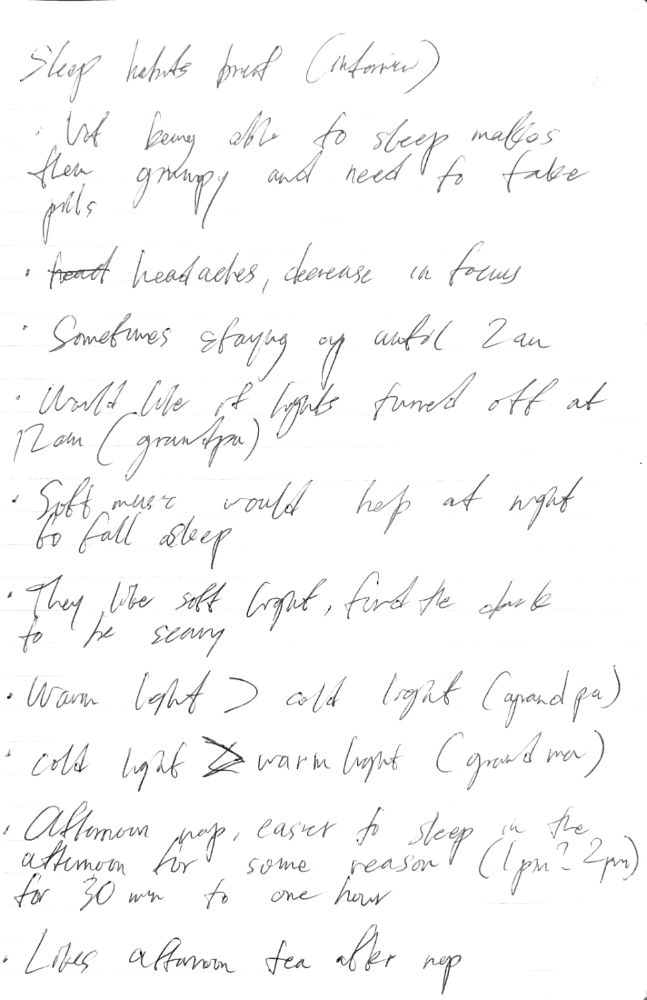
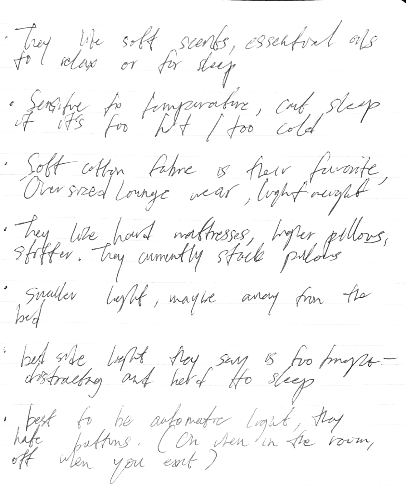
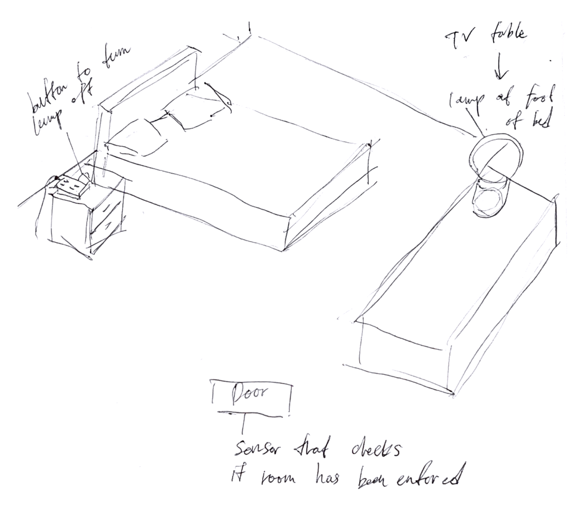
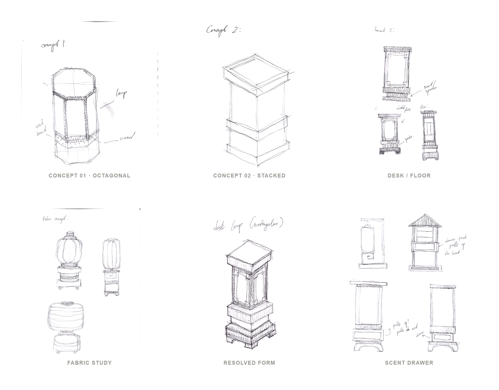
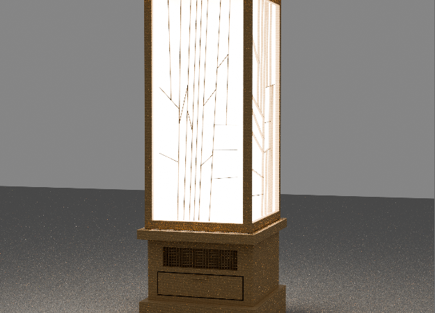
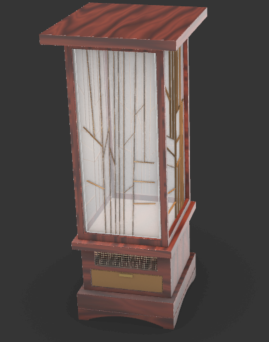
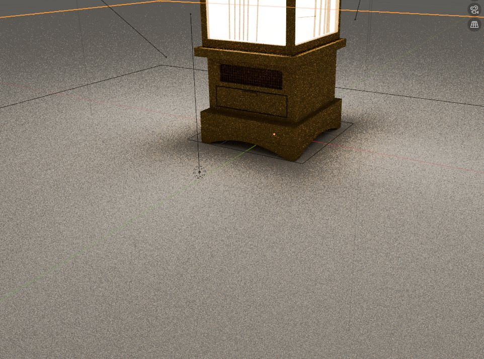

HI! I'M OLIVIA, AN INDUSTRIAL DESIGNER BASED IN BROOKLYN, NEW YORK. SCROLL TO VIEW MY WORK!
designing for {{ typed }}
HI! I'M OLIVIA, AN INDUSTRIAL DESIGNER BASED IN BROOKLYN, NEW YORK. SCROLL TO VIEW MY WORK!
designing for {{ typed }}
Elderly Wellness · 2025
Andon is a bedside wellness lamp for older adults, bringing warm, dimmable light together with gentle scent and sound in one quiet object.
These pages trace the project from a sleep-habits interview with my grandparents, through ideation and modeling, to a final lit render. The film below shows the finished work.
Andon began with a sleep-habits interview with my grandparents. Their answers surfaced four recurring pain points, and each one shaped a part of the final design.
Poor sleep left them groggy, unfocused, and reaching for pills, sometimes awake until 2am, with headaches the next day.
Response · A calm bedtime ritual of light, scent, and sound to wind down without medication.
They find total dark unsettling, yet bedside lamps are "too bright, distracting and hard to sleep." They wanted something softer and smaller, set away from the bed.
Response · A low, dimmable ambient glow, warm or cool to settle a gentle grandpa-vs-grandma disagreement.
Soft music helps them drift off, and they reach for essential oils and gentle scents to relax before sleep.
Response · A built-in speaker and a scent drawer that lifts to release fragrance.
They "hate buttons" and wanted lighting to be automatic: on when someone enters the room, off when they leave, with lights down around midnight.
Response · A door sensor that registers entry, so the lamp responds on its own.


From the interview notes
Where the lamp lives, set at the foot of the bed, with a bedside control to switch it off and a door sensor that registers when the room has been entered.

From two opening silhouettes (a faceted octagonal lantern and a stacked volume) through desk and floor refinements and a fabric variation, to the resolved tiered form and the drawer that lifts to release scent.

The lantern was built in Rhino, then taken into Blender for lighting, rendering, and animation.



Self-Driving Retreat · 2026
Drift is a self-driving RV interior for one or two travelers. It's a small, lived-in retreat built to let technology fade into the background, encouraging integration with nature. In a sense, it's the perfect homebody getaway!
Self-driving technology allows the vehicle to drive itself, opening up travel to those who can't or no longer drive. This is perfect for solo wanderers and elderly couples who still want the freedom of the open road without being behind the wheel. It's a direct nod to autonomy and independence.
Once the vehicle drives itself, the cabin is freed from the dashboard. The bed sits against a wide picture window, so the landscape becomes the focus; a wabi-sabi material palette of warm wood, paper, tatami, and soft textiles keeps the space feeling honest and lived-in rather than showroom-luxurious.
The interior draws inspiration from Japandi spaces (the meeting of Japanese warmth and Scandinavian restraint) for their quiet, grounded calm.
The large windows are inspired by Japanese trains; while driving past scenic routes, travelers can drink tea or play board games and gaze out at the passing scene.
A color, material & finish study. Lots of warm woods, paper and tatami greens, soft indigo textiles and gingham, with brushed gold and nostalgic pops. The palette anchors the wabi-sabi, lived-in feeling the whole interior is built around. The vibe is playful, nostalgic to childhood summers and late night video games.
01 · Concept & Planning
Early notes set the intent: a Japandi-style retreat for elders or couples, where self-driving makes long-distance travel safe and independent. No dashboard, no "car features"; instead a tea space for scenic, train-like rides, and a small layout that encourages connection with yourself and your companion.
02 · Layout Explorations
The first layouts leaned on familiar car logic: rotatable seats, a slide-along TV, a deployable ramp. They worked, but kept the space feeling like a vehicle. I scrapped them: if the car drives itself, it shouldn't need "car features" at all. That freed the floor plan to become a room first.
03 · Final Concept
The resolved plan reads like a small home: kitchen and bath at one end, a living/tea space in the middle, and a bed nook at the far end. Large shoji-screen-like windows (inspired by Japanese bullet trains) wrap the bed nook so the landscape becomes the view from bed.
04 · Modeling in Rhino
Modeling the interior in Rhino, in chronological order. The bed was later moved to the very end of the cabin, turning it into the best "relaxation nook," wrapped on three sides by glass.
{{ cp.typeYear }}
{{ t }}
I'm currently entering my second year of Industrial Design at Pratt Institute in Brooklyn, New York. I'm interested in how product design can support the way we live and feel — and in the intersection of health, beauty, and wellness.
As a kid I always gravitated toward hands-on activities — disassembling old jewelry, rebuilding lego sets, and fixing computers. Those habits pushed me toward exploring how things are made, and toward collaborating across disciplines to push a design further.
{{ e.place }}
{{ e.detail }}
{{ x.place }}
{{ x.detail }}
{{ a.place }}
{{ a.detail }}
{{ s }}
{{ sw }}
{{ ac }}
{{ l }}
Click any text to edit. Changes save automatically.
Sketches · Studies
Charcoal, Neocolor, and acrylic studies.
Pratt FoundationFolio Winner · 2026
{{ a.medium }}
{{ a.award }}
3D Sculptures
Sculptural studies in wood, where structure, balance, and material meet. The same instincts that drive my product work, made physical.
Pratt FoundationFolio Winner · 2026
{{ a.medium }}
{{ a.award }}
Fine Art · Foundation
Before I pursued industrial design I spent many years of studio practice in painting and drawing. These efforts are recognized through my fine arts portfolio, which has shaped the way I see form, light, and material. The pieces below act as the foundation for my design eye.
Pratt FoundationFolio Winner · 2026
Scholastic Regional Gold Key · Portfolio
Scholastic Regional Silver Key · Portfolio
Federal Duck Stamp Winner
Use the ↑ ↓ on each piece to reorder; your arrangement is saved. Click any image to enlarge.
{{ a.medium }}
{{ a.award }}